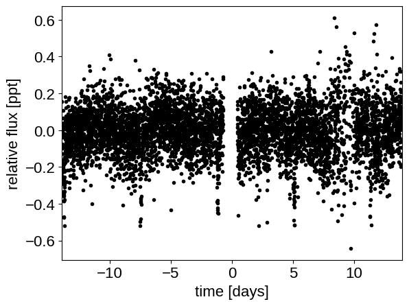
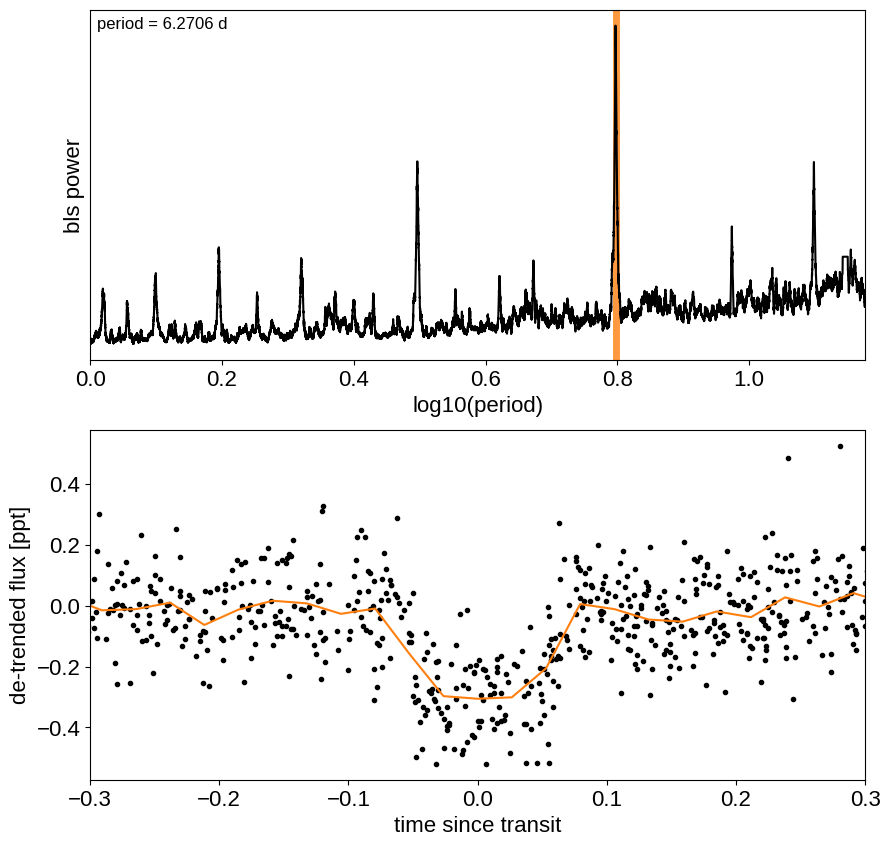
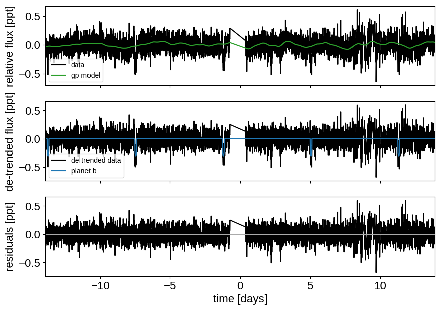
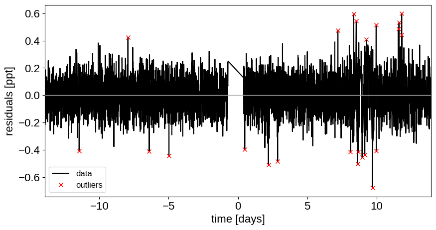
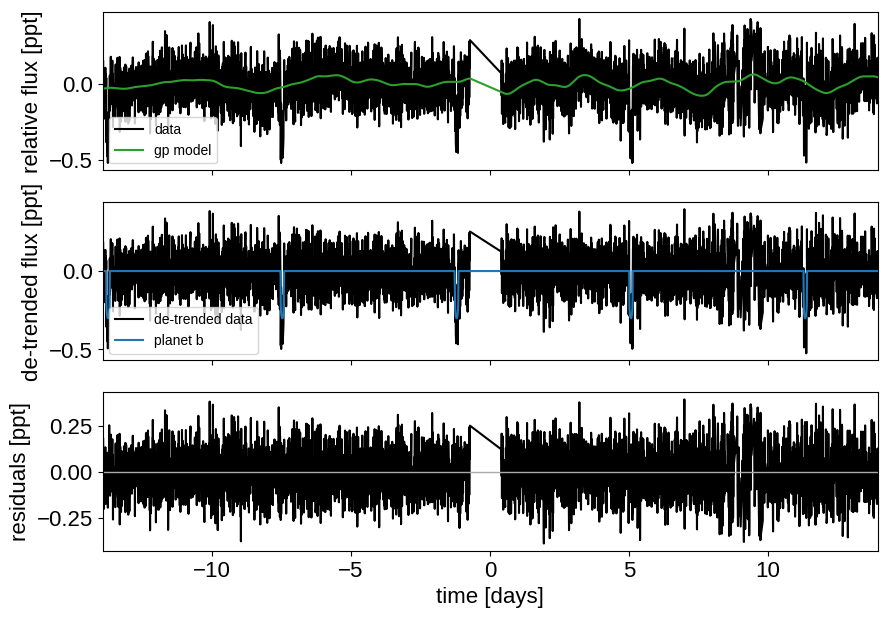
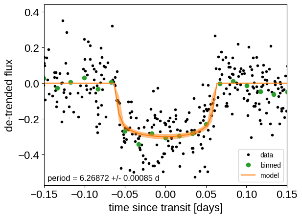
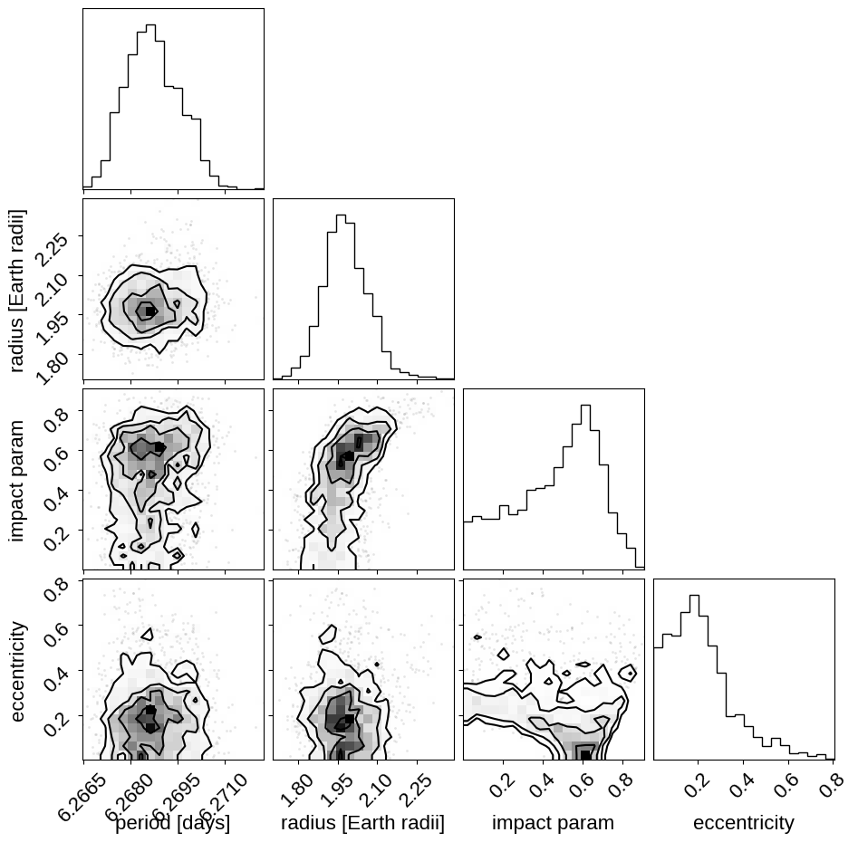

Fitting TESS data¶
import exoplanet
exoplanet.utils.docs_setup()
print(f"exoplanet.__version__ = '{exoplanet.__version__}'")
exoplanet.__version__ = '0.5.2.dev7+g28c3d53'
In this tutorial, we will reproduce the fits to the transiting planet in the Pi Mensae system discovered by Huang et al. (2018). The data processing and model are similar to the Joint RV & transit fits case study, but with a few extra bits like aperture selection and de-trending.
To start, we need to download the target pixel file:
import numpy as np
import lightkurve as lk
import matplotlib.pyplot as plt
from astropy.io import fits
lc_file = lk.search_lightcurve(
"TIC 261136679", sector=1, author="SPOC"
).download(quality_bitmask="hardest", flux_column="pdcsap_flux")
lc = lc_file.remove_nans().normalize().remove_outliers()
time = lc.time.value
flux = lc.flux
# For the purposes of this example, we'll discard some of the data
m = (lc.quality == 0) & (
np.random.default_rng(261136679).uniform(size=len(time)) < 0.3
)
with fits.open(lc_file.filename) as hdu:
hdr = hdu[1].header
texp = hdr["FRAMETIM"] * hdr["NUM_FRM"]
texp /= 60.0 * 60.0 * 24.0
ref_time = 0.5 * (np.min(time) + np.max(time))
x = np.ascontiguousarray(time[m] - ref_time, dtype=np.float64)
y = np.ascontiguousarray(1e3 * (flux[m] - 1.0), dtype=np.float64)
plt.plot(x, y, ".k")
plt.xlabel("time [days]")
plt.ylabel("relative flux [ppt]")
_ = plt.xlim(x.min(), x.max())

Transit search¶
Now, let’s use the box least squares periodogram from AstroPy (Note: you’ll need AstroPy v3.1 or more recent to use this feature) to estimate the period, phase, and depth of the transit.
from astropy.timeseries import BoxLeastSquares
period_grid = np.exp(np.linspace(np.log(1), np.log(15), 50000))
bls = BoxLeastSquares(x, y)
bls_power = bls.power(period_grid, 0.1, oversample=20)
# Save the highest peak as the planet candidate
index = np.argmax(bls_power.power)
bls_period = bls_power.period[index]
bls_t0 = bls_power.transit_time[index]
bls_depth = bls_power.depth[index]
transit_mask = bls.transit_mask(x, bls_period, 0.2, bls_t0)
fig, axes = plt.subplots(2, 1, figsize=(10, 10))
# Plot the periodogram
ax = axes[0]
ax.axvline(np.log10(bls_period), color="C1", lw=5, alpha=0.8)
ax.plot(np.log10(bls_power.period), bls_power.power, "k")
ax.annotate(
"period = {0:.4f} d".format(bls_period),
(0, 1),
xycoords="axes fraction",
xytext=(5, -5),
textcoords="offset points",
va="top",
ha="left",
fontsize=12,
)
ax.set_ylabel("bls power")
ax.set_yticks([])
ax.set_xlim(np.log10(period_grid.min()), np.log10(period_grid.max()))
ax.set_xlabel("log10(period)")
# Plot the folded transit
ax = axes[1]
x_fold = (x - bls_t0 + 0.5 * bls_period) % bls_period - 0.5 * bls_period
m = np.abs(x_fold) < 0.4
ax.plot(x_fold[m], y[m], ".k")
# Overplot the phase binned light curve
bins = np.linspace(-0.41, 0.41, 32)
denom, _ = np.histogram(x_fold, bins)
num, _ = np.histogram(x_fold, bins, weights=y)
denom[num == 0] = 1.0
ax.plot(0.5 * (bins[1:] + bins[:-1]), num / denom, color="C1")
ax.set_xlim(-0.3, 0.3)
ax.set_ylabel("de-trended flux [ppt]")
_ = ax.set_xlabel("time since transit")

The transit model in PyMC3¶
The transit model, initialization, and sampling are all nearly the same as the one in Joint RV & transit fits.
import exoplanet as xo
import pymc3 as pm
import aesara_theano_fallback.tensor as tt
import pymc3_ext as pmx
from celerite2.theano import terms, GaussianProcess
phase_lc = np.linspace(-0.3, 0.3, 100)
def build_model(mask=None, start=None):
if mask is None:
mask = np.ones(len(x), dtype=bool)
with pm.Model() as model:
# Parameters for the stellar properties
mean = pm.Normal("mean", mu=0.0, sd=10.0)
u_star = xo.QuadLimbDark("u_star")
star = xo.LimbDarkLightCurve(u_star)
# Stellar parameters from Huang et al (2018)
M_star_huang = 1.094, 0.039
R_star_huang = 1.10, 0.023
BoundedNormal = pm.Bound(pm.Normal, lower=0, upper=3)
m_star = BoundedNormal(
"m_star", mu=M_star_huang[0], sd=M_star_huang[1]
)
r_star = BoundedNormal(
"r_star", mu=R_star_huang[0], sd=R_star_huang[1]
)
# Orbital parameters for the planets
t0 = pm.Normal("t0", mu=bls_t0, sd=1)
log_period = pm.Normal("log_period", mu=np.log(bls_period), sd=1)
period = pm.Deterministic("period", tt.exp(log_period))
# Fit in terms of transit depth (assuming b<1)
b = pm.Uniform("b", lower=0, upper=1)
log_depth = pm.Normal("log_depth", mu=np.log(bls_depth), sigma=2.0)
ror = pm.Deterministic(
"ror",
star.get_ror_from_approx_transit_depth(
1e-3 * tt.exp(log_depth), b
),
)
r_pl = pm.Deterministic("r_pl", ror * r_star)
# log_r_pl = pm.Normal(
# "log_r_pl",
# sd=1.0,
# mu=0.5 * np.log(1e-3 * np.array(bls_depth))
# + np.log(R_star_huang[0]),
# )
# r_pl = pm.Deterministic("r_pl", tt.exp(log_r_pl))
# ror = pm.Deterministic("ror", r_pl / r_star)
# b = xo.distributions.ImpactParameter("b", ror=ror)
ecs = pmx.UnitDisk("ecs", testval=np.array([0.01, 0.0]))
ecc = pm.Deterministic("ecc", tt.sum(ecs ** 2))
omega = pm.Deterministic("omega", tt.arctan2(ecs[1], ecs[0]))
xo.eccentricity.kipping13("ecc_prior", fixed=True, observed=ecc)
# Transit jitter & GP parameters
log_sigma_lc = pm.Normal(
"log_sigma_lc", mu=np.log(np.std(y[mask])), sd=10
)
log_rho_gp = pm.Normal("log_rho_gp", mu=0, sd=10)
log_sigma_gp = pm.Normal(
"log_sigma_gp", mu=np.log(np.std(y[mask])), sd=10
)
# Orbit model
orbit = xo.orbits.KeplerianOrbit(
r_star=r_star,
m_star=m_star,
period=period,
t0=t0,
b=b,
ecc=ecc,
omega=omega,
)
# Compute the model light curve
light_curves = (
star.get_light_curve(orbit=orbit, r=r_pl, t=x[mask], texp=texp)
* 1e3
)
light_curve = tt.sum(light_curves, axis=-1) + mean
resid = y[mask] - light_curve
# GP model for the light curve
kernel = terms.SHOTerm(
sigma=tt.exp(log_sigma_gp),
rho=tt.exp(log_rho_gp),
Q=1 / np.sqrt(2),
)
gp = GaussianProcess(kernel, t=x[mask], yerr=tt.exp(log_sigma_lc))
gp.marginal("gp", observed=resid)
# pm.Deterministic("gp_pred", gp.predict(resid))
# Compute and save the phased light curve models
pm.Deterministic(
"lc_pred",
1e3
* star.get_light_curve(
orbit=orbit, r=r_pl, t=t0 + phase_lc, texp=texp
)[..., 0],
)
# Fit for the maximum a posteriori parameters, I've found that I can get
# a better solution by trying different combinations of parameters in turn
if start is None:
start = model.test_point
map_soln = pmx.optimize(
start=start, vars=[log_sigma_lc, log_sigma_gp, log_rho_gp]
)
map_soln = pmx.optimize(start=map_soln, vars=[log_depth])
map_soln = pmx.optimize(start=map_soln, vars=[b])
map_soln = pmx.optimize(start=map_soln, vars=[log_period, t0])
map_soln = pmx.optimize(start=map_soln, vars=[u_star])
map_soln = pmx.optimize(start=map_soln, vars=[log_depth])
map_soln = pmx.optimize(start=map_soln, vars=[b])
map_soln = pmx.optimize(start=map_soln, vars=[ecs])
map_soln = pmx.optimize(start=map_soln, vars=[mean])
map_soln = pmx.optimize(
start=map_soln, vars=[log_sigma_lc, log_sigma_gp, log_rho_gp]
)
map_soln = pmx.optimize(start=map_soln)
extras = dict(
zip(
["light_curves", "gp_pred"],
pmx.eval_in_model([light_curves, gp.predict(resid)], map_soln),
)
)
return model, map_soln, extras
model0, map_soln0, extras0 = build_model()
optimizing logp for variables: [log_rho_gp, log_sigma_gp, log_sigma_lc]
message: Optimization terminated successfully.
logp: 3338.181795537269 -> 3460.39834113472
optimizing logp for variables: [log_depth]
message: Optimization terminated successfully.
logp: 3460.39834113472 -> 3465.9617441726405
optimizing logp for variables: [b]
message: Optimization terminated successfully.
logp: 3465.9617441726405 -> 3501.4417887424706
optimizing logp for variables: [t0, log_period]
message: Desired error not necessarily achieved due to precision loss.
logp: 3501.4417887424725 -> 3507.325904702138
optimizing logp for variables: [u_star]
message: Optimization terminated successfully.
logp: 3507.325904702136 -> 3510.723293096469
optimizing logp for variables: [log_depth]
message: Optimization terminated successfully.
logp: 3510.723293096469 -> 3514.131734483311
optimizing logp for variables: [b]
message: Optimization terminated successfully.
logp: 3514.131734483311 -> 3515.137731047199
optimizing logp for variables: [ecs]
message: Optimization terminated successfully.
logp: 3515.137731047199 -> 3515.6567965737236
optimizing logp for variables: [mean]
message: Optimization terminated successfully.
logp: 3515.6567965737236 -> 3515.6766245047024
optimizing logp for variables: [log_rho_gp, log_sigma_gp, log_sigma_lc]
message: Optimization terminated successfully.
logp: 3515.6766245047024 -> 3516.274095529281
optimizing logp for variables: [log_sigma_gp, log_rho_gp, log_sigma_lc, ecs, log_depth, b, log_period, t0, r_star, m_star, u_star, mean]
message: Desired error not necessarily achieved due to precision loss.
logp: 3516.274095529281 -> 3722.200730721436
Here’s how we plot the initial light curve model:
def plot_light_curve(soln, extras, mask=None):
if mask is None:
mask = np.ones(len(x), dtype=bool)
fig, axes = plt.subplots(3, 1, figsize=(10, 7), sharex=True)
ax = axes[0]
ax.plot(x[mask], y[mask], "k", label="data")
gp_mod = extras["gp_pred"] + soln["mean"]
ax.plot(x[mask], gp_mod, color="C2", label="gp model")
ax.legend(fontsize=10)
ax.set_ylabel("relative flux [ppt]")
ax = axes[1]
ax.plot(x[mask], y[mask] - gp_mod, "k", label="de-trended data")
for i, l in enumerate("b"):
mod = extras["light_curves"][:, i]
ax.plot(x[mask], mod, label="planet {0}".format(l))
ax.legend(fontsize=10, loc=3)
ax.set_ylabel("de-trended flux [ppt]")
ax = axes[2]
mod = gp_mod + np.sum(extras["light_curves"], axis=-1)
ax.plot(x[mask], y[mask] - mod, "k")
ax.axhline(0, color="#aaaaaa", lw=1)
ax.set_ylabel("residuals [ppt]")
ax.set_xlim(x[mask].min(), x[mask].max())
ax.set_xlabel("time [days]")
return fig
_ = plot_light_curve(map_soln0, extras0)

As in Joint RV & transit fits, we can do some sigma clipping to remove significant outliers.
mod = (
extras0["gp_pred"]
+ map_soln0["mean"]
+ np.sum(extras0["light_curves"], axis=-1)
)
resid = y - mod
rms = np.sqrt(np.median(resid ** 2))
mask = np.abs(resid) < 5 * rms
plt.figure(figsize=(10, 5))
plt.plot(x, resid, "k", label="data")
plt.plot(x[~mask], resid[~mask], "xr", label="outliers")
plt.axhline(0, color="#aaaaaa", lw=1)
plt.ylabel("residuals [ppt]")
plt.xlabel("time [days]")
plt.legend(fontsize=12, loc=3)
_ = plt.xlim(x.min(), x.max())

And then we re-build the model using the data without outliers.
model, map_soln, extras = build_model(mask, map_soln0)
_ = plot_light_curve(map_soln, extras, mask)
optimizing logp for variables: [log_rho_gp, log_sigma_gp, log_sigma_lc]
message: Optimization terminated successfully.
logp: 3879.897528212497 -> 3886.071717475003
optimizing logp for variables: [log_depth]
message: Optimization terminated successfully.
logp: 3886.071717475003 -> 3886.073633480184
optimizing logp for variables: [b]
message: Desired error not necessarily achieved due to precision loss.
logp: 3886.073633480184 -> 3886.0741001509227
optimizing logp for variables: [t0, log_period]
message: Optimization terminated successfully.
logp: 3886.0741001509205 -> 3886.0741690080004
optimizing logp for variables: [u_star]
message: Optimization terminated successfully.
logp: 3886.0741690080026 -> 3886.0743208152003
optimizing logp for variables: [log_depth]
message: Optimization terminated successfully.
logp: 3886.0743208152003 -> 3886.0743230249277
optimizing logp for variables: [b]
message: Optimization terminated successfully.
logp: 3886.0743230249277 -> 3886.0743421943985
optimizing logp for variables: [ecs]
message: Optimization terminated successfully.
logp: 3886.074342194397 -> 3886.0743426810814
optimizing logp for variables: [mean]
message: Optimization terminated successfully.
logp: 3886.0743426810814 -> 3886.0765813141725
optimizing logp for variables: [log_rho_gp, log_sigma_gp, log_sigma_lc]
message: Optimization terminated successfully.
logp: 3886.0765813141725 -> 3886.076590737357
optimizing logp for variables: [log_sigma_gp, log_rho_gp, log_sigma_lc, ecs, log_depth, b, log_period, t0, r_star, m_star, u_star, mean]
message: Desired error not necessarily achieved due to precision loss.
logp: 3886.076590737356 -> 3886.0768930260997

Now that we have the model, we can sample:
import platform
with model:
trace = pm.sample(
tune=1500,
draws=1000,
start=map_soln,
# Parallel sampling runs poorly or crashes on macos
cores=1 if platform.system() == "Darwin" else 2,
chains=2,
target_accept=0.95,
return_inferencedata=True,
random_seed=[261136679, 261136680],
init="adapt_full",
)
Auto-assigning NUTS sampler...
Initializing NUTS using adapt_full...
Multiprocess sampling (2 chains in 2 jobs)
NUTS: [log_sigma_gp, log_rho_gp, log_sigma_lc, ecs, log_depth, b, log_period, t0, r_star, m_star, u_star, mean]
Sampling 2 chains for 1_500 tune and 1_000 draw iterations (3_000 + 2_000 draws total) took 604 seconds.
The number of effective samples is smaller than 25% for some parameters.
import arviz as az
az.summary(
trace,
var_names=[
"omega",
"ecc",
"r_pl",
"b",
"t0",
"period",
"r_star",
"m_star",
"u_star",
"mean",
],
)
| mean | sd | hdi_3% | hdi_97% | mcse_mean | mcse_sd | ess_bulk | ess_tail | r_hat | |
|---|---|---|---|---|---|---|---|---|---|
| omega | 0.442 | 1.823 | -2.974 | 2.997 | 0.060 | 0.043 | 1042.0 | 1400.0 | 1.00 |
| ecc | 0.211 | 0.146 | 0.000 | 0.482 | 0.005 | 0.004 | 833.0 | 839.0 | 1.00 |
| r_pl | 0.018 | 0.001 | 0.017 | 0.020 | 0.000 | 0.000 | 1193.0 | 1265.0 | 1.00 |
| b | 0.469 | 0.212 | 0.028 | 0.766 | 0.010 | 0.007 | 459.0 | 321.0 | 1.01 |
| t0 | -13.735 | 0.002 | -13.739 | -13.731 | 0.000 | 0.000 | 1434.0 | 1253.0 | 1.00 |
| period | 6.269 | 0.001 | 6.267 | 6.270 | 0.000 | 0.000 | 1574.0 | 1560.0 | 1.00 |
| r_star | 1.100 | 0.023 | 1.056 | 1.142 | 0.001 | 0.000 | 1601.0 | 1254.0 | 1.00 |
| m_star | 1.096 | 0.039 | 1.020 | 1.164 | 0.001 | 0.001 | 1888.0 | 1369.0 | 1.00 |
| u_star[0] | 0.305 | 0.223 | 0.000 | 0.704 | 0.006 | 0.004 | 1341.0 | 1059.0 | 1.00 |
| u_star[1] | 0.218 | 0.305 | -0.321 | 0.767 | 0.008 | 0.007 | 1280.0 | 1279.0 | 1.00 |
| mean | 0.001 | 0.007 | -0.013 | 0.015 | 0.000 | 0.000 | 1710.0 | 1280.0 | 1.00 |
Results¶
After sampling, we can make the usual plots. First, let’s look at the folded light curve plot:
flat_samps = trace.posterior.stack(sample=("chain", "draw"))
# Compute the GP prediction
gp_mod = extras["gp_pred"] + map_soln["mean"] # np.median(
# flat_samps["gp_pred"].values + flat_samps["mean"].values[None, :], axis=-1
# )
# Get the posterior median orbital parameters
p = np.median(flat_samps["period"])
t0 = np.median(flat_samps["t0"])
# Plot the folded data
x_fold = (x[mask] - t0 + 0.5 * p) % p - 0.5 * p
plt.plot(x_fold, y[mask] - gp_mod, ".k", label="data", zorder=-1000)
# Overplot the phase binned light curve
bins = np.linspace(-0.41, 0.41, 50)
denom, _ = np.histogram(x_fold, bins)
num, _ = np.histogram(x_fold, bins, weights=y[mask])
denom[num == 0] = 1.0
plt.plot(
0.5 * (bins[1:] + bins[:-1]), num / denom, "o", color="C2", label="binned"
)
# Plot the folded model
pred = np.percentile(flat_samps["lc_pred"], [16, 50, 84], axis=-1)
plt.plot(phase_lc, pred[1], color="C1", label="model")
art = plt.fill_between(
phase_lc, pred[0], pred[2], color="C1", alpha=0.5, zorder=1000
)
art.set_edgecolor("none")
# Annotate the plot with the planet's period
txt = "period = {0:.5f} +/- {1:.5f} d".format(
np.mean(flat_samps["period"].values), np.std(flat_samps["period"].values)
)
plt.annotate(
txt,
(0, 0),
xycoords="axes fraction",
xytext=(5, 5),
textcoords="offset points",
ha="left",
va="bottom",
fontsize=12,
)
plt.legend(fontsize=10, loc=4)
plt.xlim(-0.5 * p, 0.5 * p)
plt.xlabel("time since transit [days]")
plt.ylabel("de-trended flux")
_ = plt.xlim(-0.15, 0.15)

And a corner plot of some of the key parameters:
import corner
import astropy.units as u
trace.posterior["r_earth"] = (
trace.posterior["r_pl"].coords,
(trace.posterior["r_pl"].values * u.R_sun).to(u.R_earth).value,
)
_ = corner.corner(
trace,
var_names=["period", "r_earth", "b", "ecc"],
labels=[
"period [days]",
"radius [Earth radii]",
"impact param",
"eccentricity",
],
)

These all seem consistent with the previously published values.
Citations¶
As described in the citation tutorial, we can use citations.get_citations_for_model to construct an acknowledgement and BibTeX listing that includes the relevant citations for this model.
with model:
txt, bib = xo.citations.get_citations_for_model()
print(txt)
This research made use of \textsf{exoplanet} \citep{exoplanet:joss,
exoplanet:zenodo} and its dependencies \citep{celerite2:foremanmackey17,
celerite2:foremanmackey18, exoplanet:agol20, exoplanet:arviz,
exoplanet:astropy13, exoplanet:astropy18, exoplanet:kipping13,
exoplanet:kipping13b, exoplanet:luger18, exoplanet:pymc3, exoplanet:theano}.
print(bib.split("\n\n")[0] + "\n\n...")
@article{exoplanet:joss,
author = {{Foreman-Mackey}, Daniel and {Luger}, Rodrigo and {Agol}, Eric
and {Barclay}, Thomas and {Bouma}, Luke G. and {Brandt},
Timothy D. and {Czekala}, Ian and {David}, Trevor J. and
{Dong}, Jiayin and {Gilbert}, Emily A. and {Gordon}, Tyler A.
and {Hedges}, Christina and {Hey}, Daniel R. and {Morris},
Brett M. and {Price-Whelan}, Adrian M. and {Savel}, Arjun B.},
title = "{exoplanet: Gradient-based probabilistic inference for
exoplanet data \& other astronomical time series}",
journal = {arXiv e-prints},
year = 2021,
month = may,
eid = {arXiv:2105.01994},
pages = {arXiv:2105.01994},
archivePrefix = {arXiv},
eprint = {2105.01994},
primaryClass = {astro-ph.IM},
adsurl = {https://ui.adsabs.harvard.edu/abs/2021arXiv210501994F},
adsnote = {Provided by the SAO/NASA Astrophysics Data System}
}
...